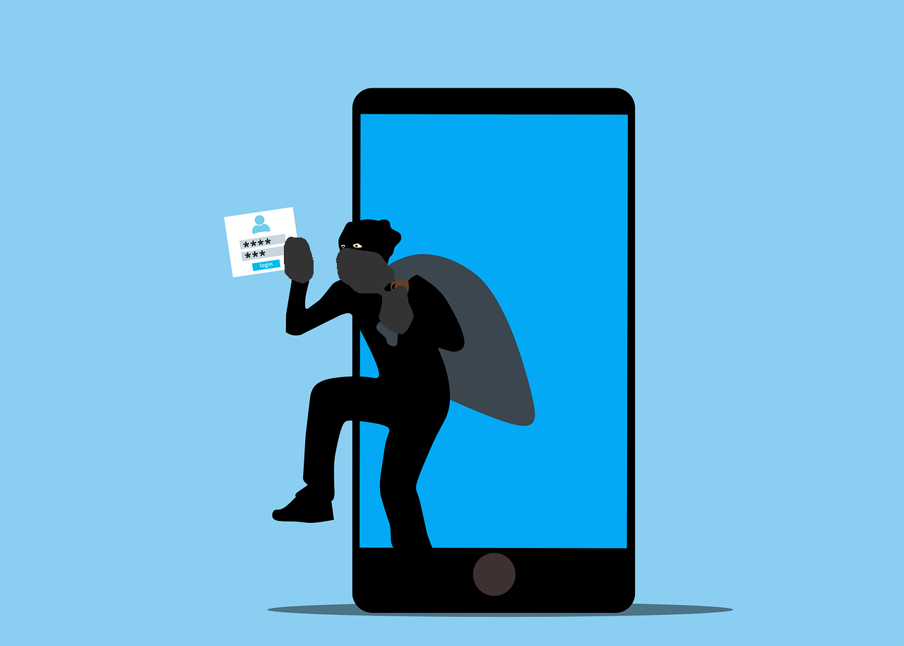

What Is Ransomware?
Imagine logging into your computer one day only to find that all your files—pictures, homework, and even
your favorite games—are locked. A scary message pops up saying you have to pay money to get them back. This
is ransomware, a type of malware (malicious software) used by cybercriminals to extort money from victims.
A Brief History of Ransomware
Ransomware has come a long way since it first appeared. In 1989, the first ransomware, called the AIDS
Trojan, was distributed through floppy disks. The ransom? A payment sent by mail!
Fast forward to the 2010s, and ransomware evolved to target businesses, hospitals, and even government
systems. Hackers started demanding payments in Bitcoin, a type of cryptocurrency, because it’s harder to
trace. One of the most infamous ransomware attacks, WannaCry in 2017, infected hundreds of thousands of
computers worldwide in just a few days. Today, ransomware is more sophisticated. Hackers may threaten to
leak sensitive data online if the ransom isn’t paid. This double-threat tactic makes it even more dangerous.
How Does Ransomware Spread?

Ransomware can sneak into your system in many ways:
-
Phishing Emails: Hackers send fake emails designed to look legitimate, tricking you into clicking a
malicious link or downloading a harmful attachment. These emails often use urgent or enticing language,
like pretending to be from your bank or a popular service.
-
Malicious Websites: Some websites are set up specifically to install malware on your device. These can
be disguised as free download sites, pop-up ads, or even fake news articles.
-
Software Vulnerabilities: When your software isn't updated, it can contain bugs or weak points that
hackers exploit to gain access to your system. Keeping your apps and operating system up to date is
critical to staying safe.
How to Protect Yourself
Here are some easy ways to keep ransomware out of your life:
-
Think Before You Click: Don’t click on links or open attachments from unknown sources. Always check if
an email is legit by looking at the sender’s address. For example, an email from your bank should come
from an official domain like <yourbank.com>, not something suspicious like
<yourbank-support123.net>. Also, hover over links to see where they lead before clicking.
-
Keep Software Updated: Regularly update your operating system, browser, and apps to fix security issues.
-
Use Antivirus Software: Install a reputable antivirus program and keep it updated.
-
Backup Your Files: Save important files to an external drive or cloud storage. This way, you won’t lose
them even if ransomware strikes.
-
Avoid Public Wi-Fi: Hackers often use public Wi-Fi networks to spread malware. Use a VPN (Virtual
Private Network) if you need to connect.
What If You’re Attacked?
If you ever become a victim of ransomware:
-
Don’t Pay the Ransom: There’s no guarantee the hackers will unlock your files, and it encourages them to
keep attacking others.
-
Disconnect Your Device: Immediately unplug your device from the internet to stop the malware from
spreading.
-
Report the Incident: Contact a trusted organization and report the attack to authorities, the FBI’s
Internet Crime Complaint Center (https://www.ic3.gov/).
Learn More
Want to dive deeper into cybersecurity? Check out these helpful resources:
By staying alert and following these tips, you can reduce your chances of falling victim to ransomware.
Remember, cybersecurity is all about being proactive!